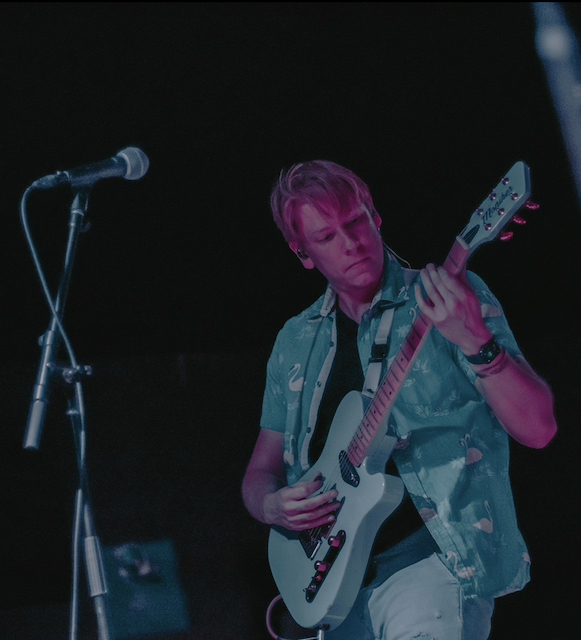

Gold Steps
Forever Starts Today
FST is a pop rock band that began in Austin around 2014.
I played bass with them from around 2017 through 2022.
Check out some songs here!

Lions and Tigers
Lions and Tigers was a band that my best friend, Anthony,
and I started around 2014. I was the lead singer and guitarist,
Anthony the drummer. Sadly, Anthony passed away
at age 28. I didn't want to continue the project without him,
but you can listen to our stuff on our Spotify.